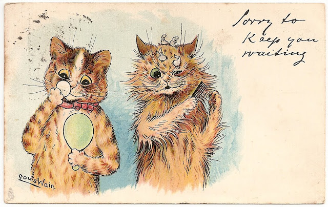

Introducción
Louis Wain fue un artista británico que revolucionó la ilustración de gatos. Sus obras capturaron la esencia de estos animales con una sensibilidad y energía únicas, transformándolos en protagonistas expresivos de la vida cotidiana.
Biografía
Nació en Londres en 1860 y desde muy joven mostró interés por el dibujo y la observación de animales. Su carrera artística comenzó con ilustraciones para revistas, pero alcanzó la fama cuando empezó a retratar gatos en situaciones humanas: tocando instrumentos, tomando el té o jugando ajedrez.
A pesar de su éxito, su vida estuvo marcada por dificultades personales y problemas de salud mental. Pasó varios años en instituciones psiquiátricas, donde continuó dibujando, creando obras cada vez más coloridas, psicodélicas y expresivas.
Obra y estilo
El estilo de Wain evolucionó con el tiempo: sus primeros gatos eran realistas y simpáticos, pero más tarde se volvieron abstractos, con patrones geométricos y colores vibrantes. Estas transformaciones han sido interpretadas como un reflejo de su mente y de su lucha interior.
Hoy, Louis Wain es recordado no solo como un artista excéntrico, sino como un pionero en la representación emocional de los animales y una figura que unió el arte con la psicología. Su legado sigue inspirando tanto a artistas como a amantes de los gatos en todo el mundo.